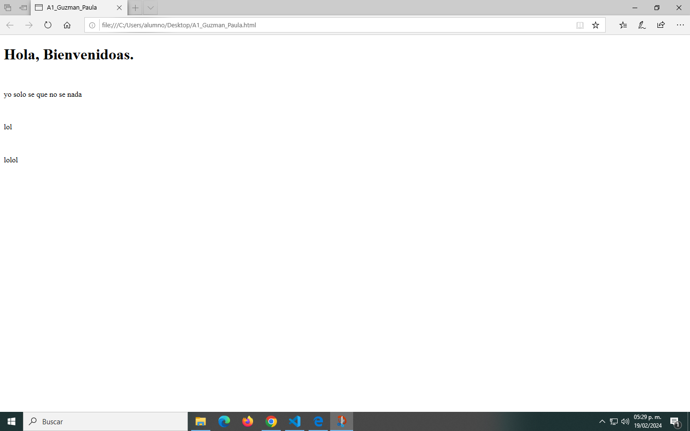
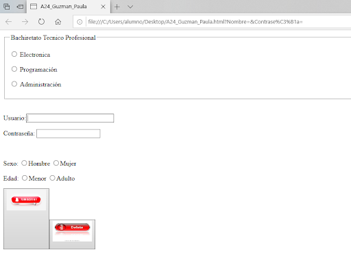
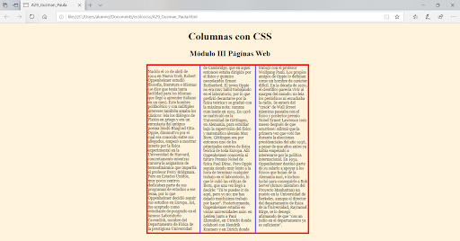
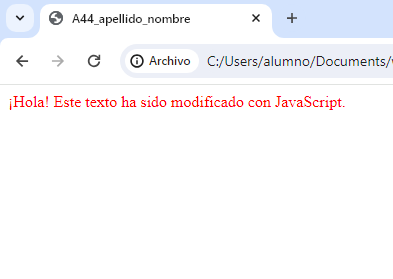

Proyecto 1: Crear la página web vista en el salón de clases el día de hoy donde se muestran varios párrafos y utiliza saltos de línea simple con la etiqueta <br>.
Proyecto 2: Crear la página web que muestre un título con <h1> un párrafo con alguna palabra Importante, otro párrafo que incluya un texto corto como "Muy importante". Ver el ejemplo visto en el salón de clases el día de hoy.
Proyecto 3: Crear una página web con HTML que muestre tres enlaces (utilizar la etiqueta <A> y <h1> para el título) como se muestra en la imagen adjunta.
Proyecto 4: Crear una página web con HTML que muestre los seis tipos de encabezados de HTML (utilizar las etiquetas <h1> ... <h6>), como se muestra en la imagen adjunta.
Proyecto 5: Crear el siguiente código HTML en el editor Visual Studio Code y ejecútalo en el Navegador Web. Solo cambia las imágenes por otros links que gustes de internet.
Proyecto 6:Crear una página web que muestre las imágenes que se solicitan a continuación: Una boda, un mercado, y una imagen de su elección.
Proyecto 6:Crear una página web que muestre las imágenes que se solicitan a continuación: Una boda, un mercado, y una imagen de su elección.
Proyecto 7: Realizar la página web de la imagen adjunta, donde aplicarás el uso de imágenes <img> con sus respectivos atributos, además de las etiquetas <strong> y <em>. La primera imagen debe estar alineada a la izquierda
con un tamaño de alto = 200 y ancho = 250. La segunda imagen está alineada a la derecha con alto = 200 y ancho = 300.

Proyecto 8: Realizar la página web de la imagen adjunta, donde aplicarás el uso del atributo align de la etiqueta <p> además de las etiquetas <img> <strong> y <em>.
Proyecto 9: Crear la página web solicitada en el salón de clases el día de hoy donde se muestran listas anidadas.
Proyecto 10: Crear una Pagina web que muestre tres imagenes con borde y espacios en blanco al rededor de ella (20px a la izquierda y derecha y 10px arriba y abajo de la imagen), ademas las imagenes deben ser hipervinculos a otras paginas.
Proyecto 11: Crear la página web solicitada en el salón de clases el día de hoy donde se muestran listas anidadas.
Proyecto 12: Crear una Pagina web igual a la de la imagen adjunta. Observa que la ultima lista de de definición.
Proyecto 13: Realizar la Página web vista el día de hoy en el salón de clases para sellar, donde contenía una Tabla con "información personal" , "información de contacto", Edad, Genero, etc.
Proyecto 14: Realizar la pagina web que se muestra en la imagen adjunta, donde se muestra una tabla con las celdas en color utilizando la propiedad bgcolor, también se emplean las propiedades width y height.
Proyecto 15: Realizar la Pagina Web adjunto que contiene una Tabla. ==>Utilizar las etiquetas semánticas: <caption>, <thead>,<tbody>, <tfoot> ==>También ocuparas la etiqueta de agrupación de columnas: <colgroup>
para indicar el ancho de las columnas
Realizar la Página Web vista de ejemplo hoy en salón de clases donde utilizamos
<colgroup>Realizar la Página Web vista de ejemplo hoy en salón de clases donde utilizamos <colgroup>.
Proyecto 17: Realizar la Página Web de la imagen adjunta. ==>Utilizar las etiquetas semánticas. <caption >, <thead>, <tbody>, <tfoot> y Las etiquetas de <colgroup> <col>.
Proyecto 18: Realizar la Pagina Web adjunto que contiene una Tabla con imágenes y Enlaces
<a>. ==>Utilizar las etiquetas semánticas: <caption > , <thead >, <tbody >, <tfoot >.
Proyecto 19: Realizar la Pagina Web de la imagen adjunto que contiene un Formulario. ==>Utilizar las etiquetas:: <form>, <p> , <input> con los atributos: type , name , size, min , value .
Proyecto 20: Realizar la Pagina Web de la imagen adjunto que contiene un Formulario. ==>Utilizar los tipos(type): text, tel, email y el comentario con <textarea>.
Proyecto 21: Realizar la Pagina Web de la imagen adjunto que contiene un Formulario. ==>Utilizar los tipos(type): text, radio, checkbox y el comentario con <textarea>.
Proyecto 22: Realizar la Pagina Web de la imagen adjunto que contiene un Formulario. ==>Utilizar los tipos(type): text, password, date, time, range, email, url, y el comentario con <textarea> y lista con <select>.
Proyecto 23: Realizar la Pagina Web de la imagen adjunto que contiene un Formulario. ==>Utilizar los tipos(type): color Y lista desplegables con <select> y <optgroup> Incluir tu nombre en la parte inferior derecha de la pagina
web.

Proyecto 24: Realizar la Pagina Web de la imagen adjunto que contiene un Formulario. ==>Utilizar los tipos(type): radio, text, password, reset - Dos botónes <button> que incluya la imagen indicada o una parecida o a fin Incluir tu
nombre en la parte inferior derecha de la pagina web. - Máximo 8 caracteres para el campo usuario - Mínimo 6 caracteres para el Password - Al cargarse el formulario el foco lo debe tener el campo usuario
Proyecto 25: Leer el documento Actividad 15 16 Bloque II - 2021.pdf y, ver el video Para conocer las instrucciones a realizar La Actividad no. 16 y 17. Realizar solo la Pagina web donde utilizas CSS Externo. El documento .pdf indica Actividad
15 y 16 Pero realmente son Actividad No. 16 Y 17
Proyecto 26: Realizar la Pagina Web de la imagen adjunto . ==>Utilizar CSS Externo
Proyecto 27: Realizar la Pagina Web de la imagen adjunto. Es la misma de la Actividad 26. Pero ahora utilizando solo CSS para aplicar los estilos indicados en la pagina de la imagen adjunta ==>Utilizar CSS Externo o Interno
Proyecto 28: Realizar la Pagina Web de la imagen adjunto que contiene un formulario (utilizar etiqueta
<form>). utilizando solo CSS para aplicar los estilos indicados en la pagina de la imagen adjunta ==>Utilizar CSS Externo o Interno para emplear las Propiedades: font-family: font-size: text-align: color: background-color: width: height:
margin: padding: cursor: border:

Proyecto 29: Realizar la Pagina web vista en el salon de clases de ejemplo "Columnas en CSS" Ver la imagen adjunta para que te des una idea del tamaño de texto de las columnas. Poner cualquier otro texto del mismo tamaño o más largo.
Proyecto 30: Elaborar la Pagina web que muestra un Menú Horizontal (ver imagen adjunta) es muy parecido al visto en el salón de clases el día de hoy. Al pasar el puntero del mouse por los items del menú que cambien el color y el puntero
del mouse cambie a la manita. Utilizar la Pseudo-clase hover
Proyecto 31: Crear una Pagina web que muestre los diferentes tipos de bordes de la Propiedad border-style CSS. No olvides agregarle el color que gustes al borde, con la Propiedad border-color y Las propiedades Width, float y margin para
acomodar los párrafos como se muestran en la imagen . Ver imagen adjunta.
Proyecto 32: Crear el ejemplo del video adjunto, donde se crea un menú horizontal desplegable.
Proyecto 33:Crear una Pagina web que muestre un menú horizontal como se muestra en la imagen adjunta Utilizar las etiquetas
<header> y
<nav>
Proyecto 34: Realizar el Proyecto visto en clase sobre una pagina de cafeteria CETis
Proyecto 35: Utilizando el atributo z-index de CSS colocar los elemento como se muestran en la imagen adjunta
Proyecto 36: Elaborar la pagina web vista en salón de clase que contiene una tabla a la cual le aplicamos estilo con CSS utilizando las propiedades: empty-cells ,table-layout, caption-side, border-collapse, border-spacing y empty-cells.
empty-cells: hide;: Oculta las celdas vacías en la tabla.table-layout: fixed;: Fija el ancho de la tabla, lo que permite que las columnas tengan anchos iguales.caption-side: top;: Ubica la leyenda (caption) encima de la tabla.border-collapse:
collapse;: Fusiona los bordes de las celdas adyacentes para crear un borde más limpio.empty-cells: hide;: Oculta las celdas vacías en la tabla.
Proyecto 37: Elaborar la pagina web adjunta que contiene una tabla a la cual le aplicamos estilo con CSS
Proyecto 38: Elaborar la pagina web adjunta que contiene una tabla a la cual le aplicamos estilo con CSS
Proyecto 39: Crear el ejemplo utilizando Pseudoclases visto en salón de clases
Proyecto 40: Realizar el siguiente formulario <form> de la imagen adjunta donde aplicas los pseudoclase indicadas. (:focus :required :hover ) Los campos de entrada y el área de texto tienen un estilo común que incluye un borde, relleno
y margen. Los campos de entrada y el área de texto que tienen el atributo required aplican un borde rojo para indicar que son campos obligatorios. Cuando un campo de entrada o el área de texto tiene el foco, su borde se cambia a azul.
El botón de enviar tiene un estilo con un fondo verde, texto blanco y bordes redondeados. Al pasar el mouse sobre el botón de enviar, su color de fondo cambia a un tono más oscuro de verde.
Proyecto 41: Utilizando JavaScript Realizar la siguiente pagina web (ver imagen adjunta) donde muestre un mensaje con Alert y después de dar clic mostar la siguiente imagen. 1. Incluir JavaScript dentro del mismo documento HTML 2. Incluir
JavaScript como archivo externo. 3. Incluir JavaScript en line.
Proyecto 41: Utilizando JavaScript Realizar la siguiente pagina web (ver imagen adjunta) donde muestre un mensaje con Alert y después de dar clic mostar la siguiente imagen. 1. Incluir JavaScript dentro del mismo documento HTML 2. Incluir
JavaScript como archivo externo. 3. Incluir JavaScript en line.
Proyecto 42: Realizar la Pagina web guiada y creada por el Profesor. Donde se utiliza el método ONCLICK y JavaScript.
Proyecto 42: Realizar la Pagina web guiada y creada por el Profesor. Donde se utiliza el método ONCLICK y JavaScript.
Proyecto 43:Realizar la pagina web de la imagen adjunta. que al dar click sobre el elemento cambie de color

Proyecto 44: Realizar el ejemplo visto en clases donde utilizamos el método getElementById().
Proyecto 45: Realizar la pagina web de la imagen adjunta, donde utilizaras el método getElementById(), onclick, innerHTML y las propiedades de CSS Necesarias. Y continuar con la elaboración de su Portafolio de evidencias.
Proyecto 46: Realizar con JavaScript para calcular el área y Perímetro de un cuadrado visto en salón de clases. Guiarse del video adjunto.
Proyecto 46: Realizar con JavaScript para calcular el área y Perímetro de un cuadrado visto en salón de clases. Guiarse del video adjunto

Proyecto 47: Realizar con html, CSS y JavaScript una Pagina web que solicite el nombre y la edad del usuario como se muestra en la imagen adjunta. Utilizar el método onclick y prompt de javaScript para solicitar los datos.
Proyecto 47: Realizar con html, CSS y JavaScript una Pagina web que solicite el nombre y la edad del usuario como se muestra en la imagen adjunta. Utilizar el método onclick y prompt de javaScript para solicitar los datos.
Proyecto 47: Realizar con html, CSS y JavaScript una Pagina web que solicite el nombre y la edad del usuario como se muestra en la imagen adjunta. Utilizar el método onclick y prompt de javaScript para solicitar los datos.
Proyecto 48: Realizar con html, CSS y JavaScript una Pagina web para calcular el área de un Triangulo como se muestra en la imagen adjunta.
Proyecto 49: Realizar una investigación sobre las instrucciones: if(), if()-else y else if().
Proyecto 50: Realizar una pagina web que solicite datos desde un formulario HTML y valide utilizando JavaScript que el usuario no envíe el formulario con los campos vacíos.
Proyecto 50: Realizar una pagina web que solicite datos desde un formulario HTML y valide utilizando JavaScript que el usuario no envíe el formulario con los campos vacíos.
Proyecto 50: Realizar una pagina web que solicite datos desde un formulario HTML y valide utilizando JavaScript que el usuario no envíe el formulario con los campos vacíos.
Proyecto 50: Realizar una pagina web que solicite datos desde un formulario HTML y valide utilizando JavaScript que el usuario no envíe el formulario con los campos vacíos.
Proyecto 50: Realizar una pagina web que solicite datos desde un formulario HTML y valide utilizando JavaScript que el usuario no envíe el formulario con los campos vacíos.
Proyecto 51: Realizar con html, CSS y JavaScript una Pagina web que muestre un menú desplegable con cinco opciones decolores diferentes para el fondo de la Pagina. Utilizar la sentencia switch() y el método onchange de javaScript para
que cuando cambie la opción del menú desplegable aplique el color de fondo indicado.
Proyecto 51: Realizar con html, CSS y JavaScript una Pagina web que muestre un menú desplegable con cinco opciones decolores diferentes para el fondo de la Pagina. Utilizar la sentencia switch() y el método onchange de javaScript para
que cuando cambie la opción del menú desplegable aplique el color de fondo indicado.
Proyecto 51: Realizar con html, CSS y JavaScript una Pagina web que muestre un menú desplegable con cinco opciones decolores diferentes para el fondo de la Pagina. Utilizar la sentencia switch() y el método onchange de javaScript para
que cuando cambie la opción del menú desplegable aplique el color de fondo indicado.
Proyecto 51: Realizar con html, CSS y JavaScript una Pagina web que muestre un menú desplegable con cinco opciones decolores diferentes para el fondo de la Pagina. Utilizar la sentencia switch() y el método onchange de javaScript para
que cuando cambie la opción del menú desplegable aplique el color de fondo indicado.
Proyecto 51: Realizar con html, CSS y JavaScript una Pagina web que muestre un menú desplegable con cinco opciones decolores diferentes para el fondo de la Pagina. Utilizar la sentencia switch() y el método onchange de javaScript para
que cuando cambie la opción del menú desplegable aplique el color de fondo indicado.
Proyecto 52: Realizar con html, CSS y JavaScript una Pagina web que muestre un formulario para la "Calculadora de Energía y Trabajo" visto en salón de clases.
Proyecto 53: Elaborar la pagina web adjunta que emplea la estructura do-while para validar que la edad introducida sea mayor a 12 años, relazando iteraciones mientras no se cumpla que la edad sea mayor a 12.
Proyecto 54: Elaborar la pagina web adjunta que emplea la estructura while
Proyecto 54: Elaborar la pagina web adjunta que emplea la estructura while
Proyecto 54: Elaborar la pagina web adjunta que emplea la estructura while
Proyecto 54: Elaborar la pagina web adjunta que emplea la estructura while
Proyecto 54: Elaborar la pagina web adjunta que emplea la estructura while